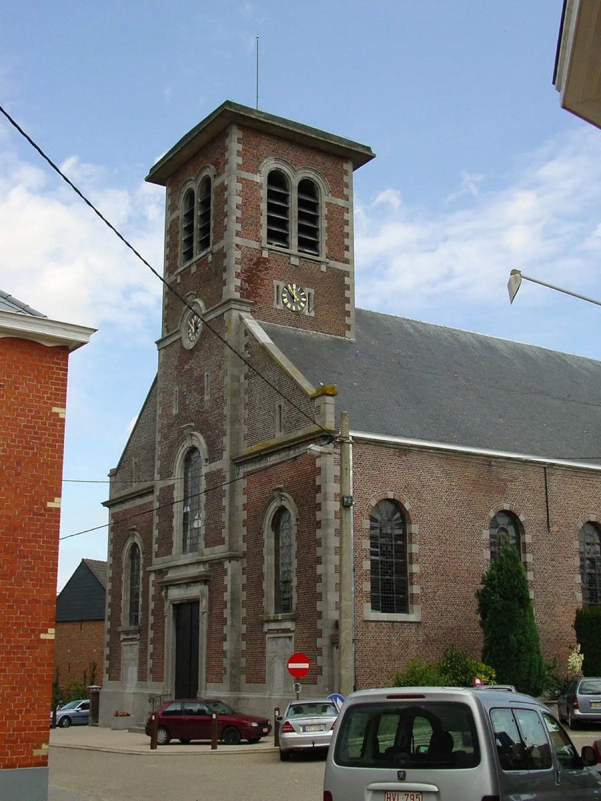

Parochie Sint-Niklaas · Pajottenland
Sint-Niklaaskerk Herfelingen
Een classicistische dorpskerk uit 1781, al meer dan twee eeuwen het hart van Herfelingen. Iedereen is welkom.

Parochie Sint-Niklaas · Pajottenland
Een classicistische dorpskerk uit 1781, al meer dan twee eeuwen het hart van Herfelingen. Iedereen is welkom.